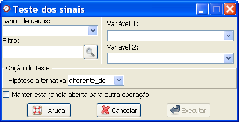

Teste dos sinais
Teste dos sinais
A função "Teste dos sinais" permite realizar o
teste dos sinais.
O caminho para a função é: Análises
 Testes de hipótese
Testes de hipótese
 Testes não-paramétricos
Testes não-paramétricos
 Teste dos sinais.
Teste dos sinais.

Figura
1. Janela "Teste dos sinais".
O primeiro passo é selecionar o banco de dados. Para isso,
é necessário que o banco já tenha sido aberto (detalhes sobre
como abrir abrir dados ou
importar dados via ODBC).
Em
seguida, deve-se escolher as duas variáveis de interesse para a
realização do teste.
Pode-se escolher, como hipótese alternativa, as opções “diferente de”, “maior que” e “menor que”.
O filtro pode ser utilizado caso o interesse seja realizar o
teste com apenas uma parte do banco de dados ao invés de realizar
o teste com o banco completo. A utilização do filtro não altera
o banco de dados.
Após definir as opções, clique em
"Executar".
A opção de "Manter esta janela aberta para outra operação" permite que outros testes sejam realizados sem a necessidade de reabrir a janela.